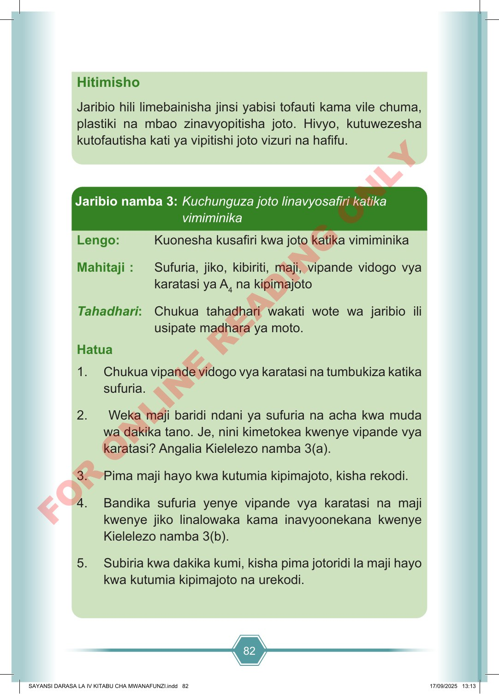

82 Hitimisho Jaribio hili limebainisha jinsi yabisi tofauti kama vile chuma, plastiki na mbao zinavyopitisha joto. Hivyo, kutuwezesha kutofautisha kati ya vipitishi joto vizuri na hafifu. Lengo: Kuonesha kusafiri kwa joto katika vimiminika Mahitaji : Sufuria, jiko, kibiriti, maji, vipande vidogo vya karatasi ya A 4 na kipimajoto Tahadhari: Chukua tahadhari wakati wote wa jaribio ili usipate madhara ya moto. Hatua 1. Chukua vipande vidogo vya karatasi na tumbukiza katika sufuria. 2. Weka maji baridi ndani ya sufuria na acha kwa muda wa dakika tano. Je, nini kimetokea kwenye vipande vya karatasi? Angalia Kielelezo namba 3(a). 3. Pima maji hayo kwa kutumia kipimajoto, kisha rekodi. 4. Bandika sufuria yenye vipande vya karatasi na maji kwenye jiko linalowaka kama inavyoonekana kwenye Kielelezo namba 3(b). 5. Subiria kwa dakika kumi, kisha pima jotoridi la maji hayo kwa kutumia kipimajoto na urekodi. Jaribio namba 3: Kuchunguza joto linavyosafiri katika vimiminika SAYANSI DARASA LA IV KITABU CHA MWANAFUNZI.indd 82 SAYANSI DARASA LA IV KITABU CHA MWANAFUNZI.indd 82 17/09/2025 13:13 17/09/2025 13:13 F O R O N L I N E R E A D I N G O N L Y